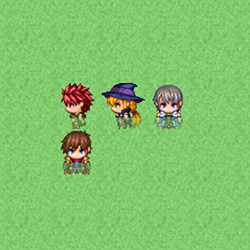

RPG TKOOL MZ HELP
データベース

タイルセットの設定
データの役割
タイルセットとは、ひとつのマップをデザインするのに使う“タイル”をまとめたデータです。タイル用の画像に、キャラクターが通行できるかなど、ゲームにおける挙動を設定することで作成します。
マップ用に作成したオリジナルの画像も、その画像ファイルを設定したタイルセットを作り、それをマップデータに割り当てることで使えるようになります。
なお、タイル上を乗り物（小型船／大型船）が通行できるかどうかは、タイルセット上の位置で決まっています。詳しくは［素材規格］の項目をご覧ください。
飛行船については、すべてのタイルを通行可能となっています。ただし、着陸できるのは、歩行できる場所のみです。
※歩行できる場所でも以下の条件の場所は着陸できません。
- 茂み属性
- タイルセットA1
設定項目の内容
基本設定
-
名前
タイルセットの名前です。この設定はエディターのみで使用されます（プレイ中のゲームへの影響はありません）。
-
モード
タイルセットの用途です。主に下層タイルの特殊仕様や戦闘背景の取り扱いに影響します。
基本的には、海や陸地など世界全図を表現するものの場合は［フィールドタイプ］、それ以外の場合は［エリアタイプ］を選んでください。
画像
タイルに使う画像ファイルの設定です。種別（A～Eのセット）ごとにボタンを押すと表示される［画像の選択］ウィンドウで、使用するファイルを指定します。ファイルを指定すると、その内容が右の［タイルリスト］に表示されます。
タイルリスト
［画像］に設定されたタイル用の画像が表示されます。下の［A］～［E］のタブをクリックすると、表示する画像を切り替えられます。［A］のタブには［画像］の［A1］～［A5］で指定したファイルのタイルを順に表示します。
各タイルには、現在の設定編集モードにおける設定値を表すマークが重ねて表示されます。これをクリックすると設定値を変更できます。
なお、設定値が3種類以上ある項目（通行、地形タグ）では、右ボタンを押すと左ボタンとは逆向きに変化します。
また、ボタンを押したままポインタを動かすと、ポインタが通過したタイルの設定を連続して変更することができます。
-
通行
タイル上を通行できるかどうかの編集モードに切り替えます。タイルリストに表示されるマークは［○］が通行可、［×］が通行不可を表します。［☆］も通行可能なタイルですが、建物の背後にキャラクターが隠れる表現となります（［A］以外のタブにのみ設定可）。
タイルセット Bの一番左上のタイルは、上層に何も置かれていない状態を表すため★で固定されています。 -
通行（4方向）
タイル上を通行できる方向の編集モードに切り替えます。［通行：ブロック］の補助的な設定で、特定の方向にしか移動できないタイルを作るのに使います。たとえば崖を表現するタイルで端にあたる部分を移動不可にすれば、その端と隣り合うタイルの間は移動できなくなり、“高低差”を表現できます。
タイルリストに表示されるマークは、上下左右の4方向について、矢印ありが移動可、矢印なしが移動不可を表します。なお［通行］の設定値を変えると、この設定値も自動的に変わります。 -
梯子
梯子設定の編集モードに切り替えます。この設定を付与すると、タイル上を通行するキャラクターの向きが上に固定され、梯子やロープなどで昇降する様子などを表現できます。
設定の有無はタイルリスト上のマークをクリックして変更します。設定を付与したタイルにはマーク（梯子の絵柄）が表示されます。 -
ダメージ床
ダメージ床の編集モードに切り替えます。この設定を付与すると、タイル上を通行するキャラクターがダメージを受けるようになります。毒の沼地やトゲが突き出す床など危険な地面を表現するのに使います。
設定の有無はタイルリスト上のマークをクリックして変更します。設定を付与したタイルにはマーク（ふたつの三角形）が表示されます -
茂み
茂み設定の編集モードに切り替えます。この設定を付与すると、タイル上を通行するキャラクターの下から1/4ぶんが半透明表示になり、生い茂る草地で足元が隠れる様子などを表現できます。
ただし、［A1］～［A4］に含まれるタイルに設定した場合、画像によっては、一部のタイルで半透明になりません。
設定の有無はタイルリスト上のマークをクリックして変更します。設定を付与したタイルにはマーク（ふたつの波線）が表示されます。 -
カウンター
カウンター設定の編集モードに切り替えます。この設定を付与すると、キャラクターとイベントが隣り合っていない状態でもタイル越しにイベントを開始させることができるようになり、“机を挟んで人物に話しかける”様子などを表現できます。
なお、［A2］のタイルに設定した場合、この属性を持つタイルのパターン下端は12ドットぶん下にずれて表示されます。
設定の有無はタイルリスト上のマークをクリックして変更します。設定を付与したタイルにはマーク（菱形の四角形）が表示されます。
-
地形タグ
各タイルに対して0～7の数値を割り当てます。具体的な用途は規定されていません。イベントコマンド［指定位置の情報取得］を使用することで取得できます。取得される地形タグは、0以外で上位のレイヤーにあるものが優先されます。
-
ページコピー
現在のページの設定をクリップボードにコピーします。
コピーの対象となる情報は、通行、通行（4方向）、梯子、茂み、カウンター、ダメージ床、地形タグです。 -
ページ貼り付け
クリップボードの内容を現在のページに貼り付けます。 ［A］タブからコピーした情報は、［A］タブにのみ貼り付けが可能です。 ［A］タブ以外からコピーした情報は［B］、［C］、［D］、［E］タブに貼り付けが可能です。
-
メモ
ゲーム作成中のメモ書きに使えます。
右クリックするとメニューが表示され、［プラグインヘルプ］を選択するとプラグインのヘルプが表示されます。